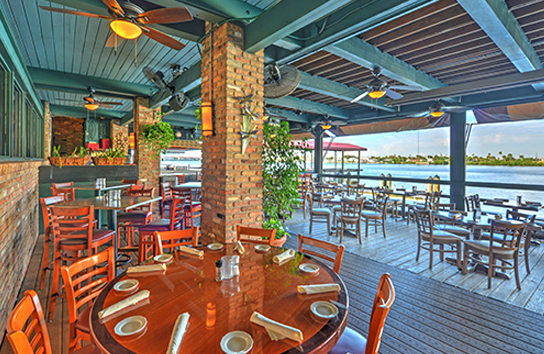
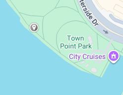

Welcome Aboard!
The Crow's Nest is a waterfront seafood bar and grill in Norfolk, Virginia overlooking the Elizabeth River. Enjoy fresh seafood, nautical traditions, and harbor views.
From the Galley

The Sailor's Catch
A hearty seafood platter featuring lobster tails, shrimp, seared scallops, roasted potatoes, and corn on the cob.

Fish & Chips
Golden beer-battered fish served with fries and tartar sauce.

The Admiral's Platter
A premium seafood feast featuring lobster, grilled shrimp, tender scallops, calamari, and octopus, served with lemon wedges and garlic butter.
Find your way aboard
Located along the Elizabeth River waterfront in Norfolk, Virginia.
Find us along the Elizabeth River waterfront in Norfolk, Virginia, near the harbor.
